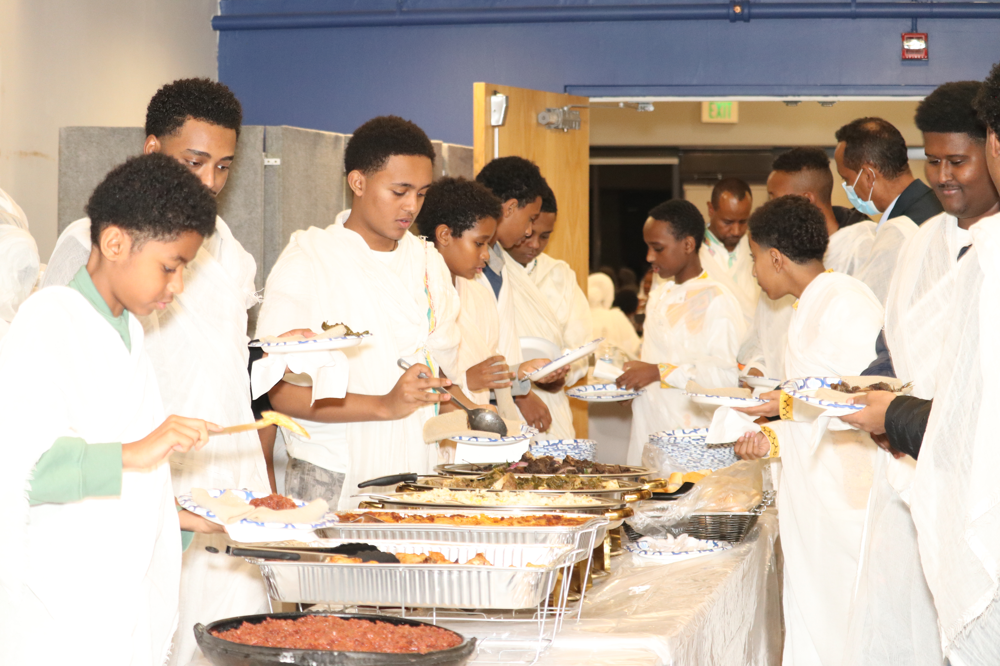

1) Choose a sponsor option
Sponsor a child or elder for $25/month, or select a one-time donation. Sponsors can choose a profile or support the “greatest need.”
Go to Sponsor/Donate →Children & Elder Care

HopeBridge sponsorship is designed to be simple, respectful, and transparent. Supporters can sponsor a child or elder for $25/month (subscription) or give a one-time gift. Below is how we turn support into real help and how we share updates.
A clear flow from support to impact.
Sponsor a child or elder for $25/month, or select a one-time donation. Sponsors can choose a profile or support the “greatest need.”
Go to Sponsor/Donate →Funds go toward verified needs such as food, school supplies, hygiene items, household essentials, and urgent support when appropriate.
See what $25 can provide →We share progress updates and impact notes with respect and permission, prioritizing safety and privacy— especially for children and vulnerable elders.
How updates work →Examples of essential support. Actual needs vary by person, season, and location.
Want to give once instead? Visit the One-Time Donation section.
Trust matters. We aim to keep supporters informed while protecting dignity and personal safety.
Sponsors receive periodic updates (for example, monthly or quarterly summaries), depending on what is appropriate and what information can be shared responsibly.
Brief progress notes, key needs met, and photos only when permission is granted. We focus on outcomes, not exposure.
When available, we share simple documentation or reporting summaries to show how funds were used (especially for larger campaigns or community events).
Children and elders may be identified with limited details. Sensitive information is never shared publicly. Safety and dignity come first.
Example of the type of summary you might see (placeholder content for your project).
Food support, hygiene items, and basic household supplies provided to meet urgent needs.
School supplies and learning materials distributed to support children’s education.
Volunteer time, transportation help, and seasonal support coordinated through events and outreach.
These examples are included for layout and planning. You can replace them with real updates later.
Sponsor a child or elder for $25/month, donate once, or volunteer your time.